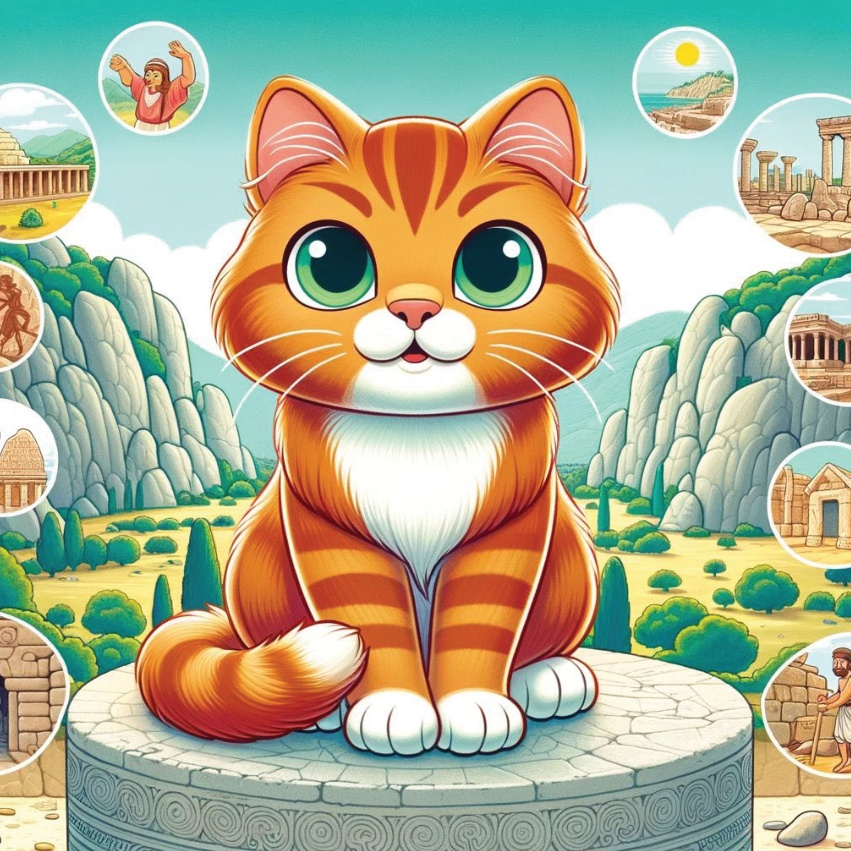
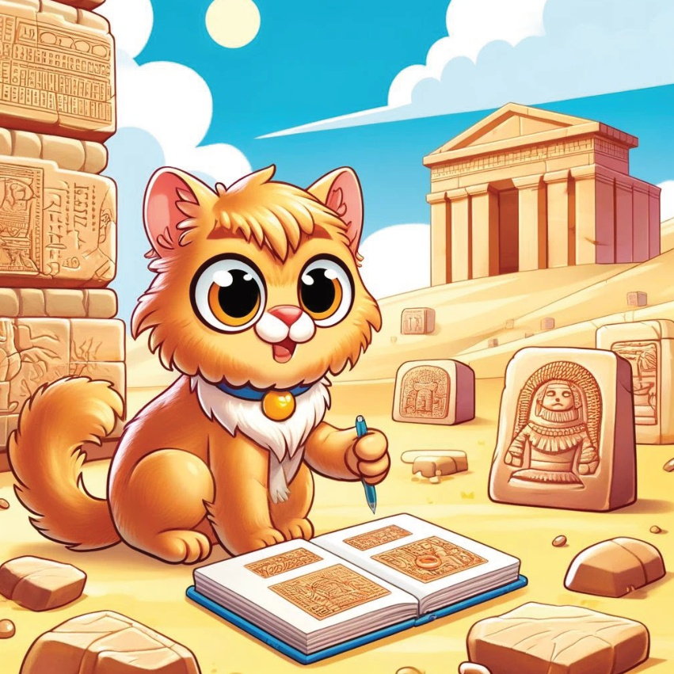
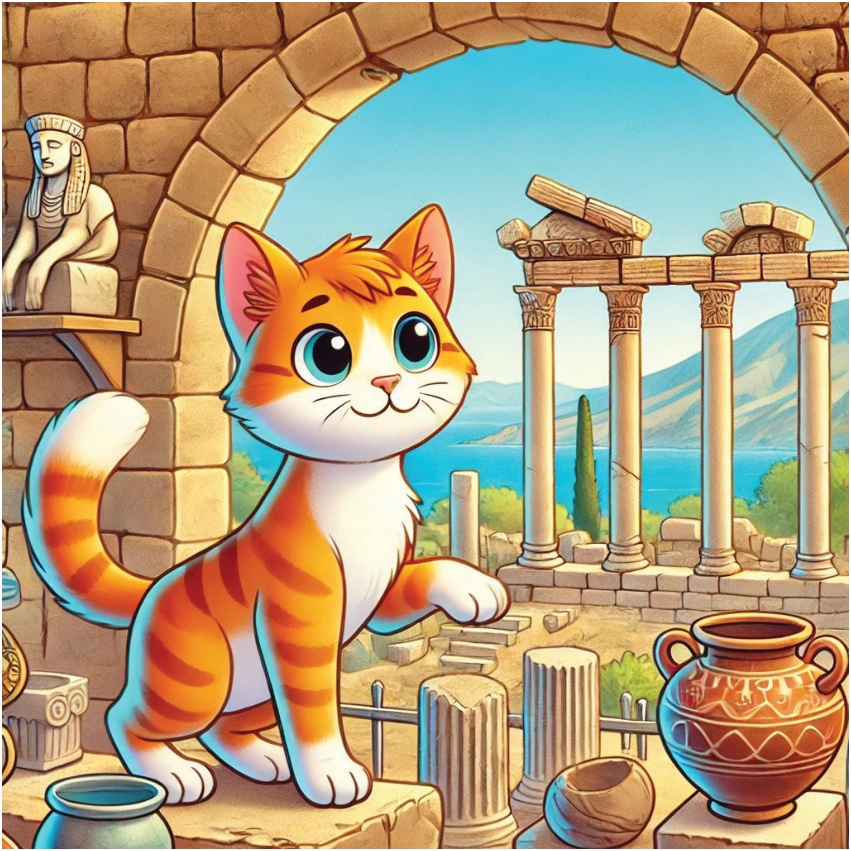
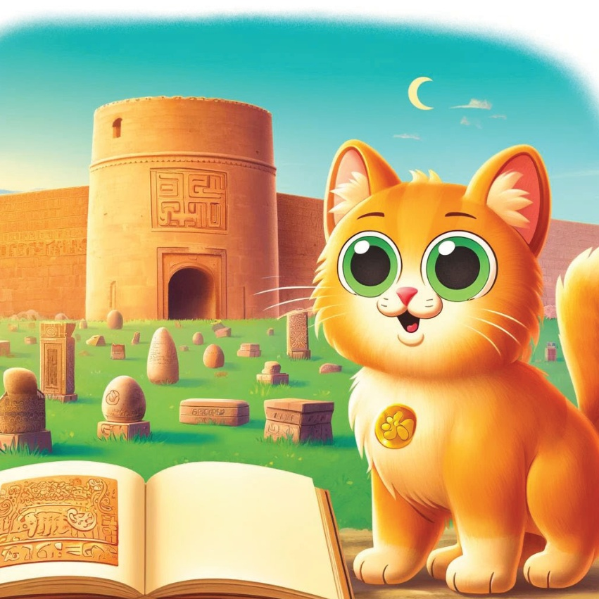
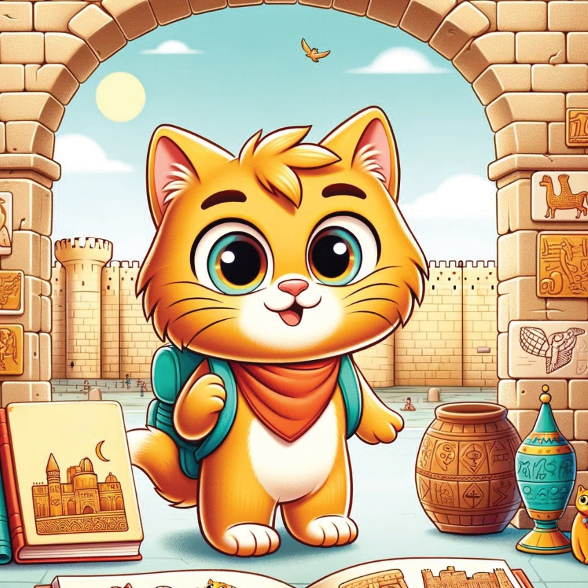

Karamel, la petite chatte aventureuse,
était fascinée par les anciens royaumes
qui avaient autrefois rule le Türkiye.
Un jour, elle trouva une vieille carte
marquant les lieux de ces anciens royaumes.
Excité, elle se lança un voyage
pour apprendre l'histoire et la culture de ces terres anciennes.
4
5
La région de Marmara -
Istanbul –
Karamel a visité Istanbul,
où elle a exploré les vestiges
de l'Empire byzantin.
6
7
La région Égée –
L'civilisation Ionienne à Izmir
Ensuite, Karamel est allée à Izmir,
où elle a découvert les contributions
de la civilisation Ionienne à la science,
à la philosophie et à l’art.
8
9
La région méditerranéenne -
La civilisation lycienne à Antاليا
Dans Antالیا, Karamel a exploré
la civilisation lycienne antique.
Elle a appris sur leurs tombes sculptées dans la roche uniques et la Ligue lycienne.
10

11
Le royaume de l’Anathurétis,
la cité de Hattusa,
était visitée par les Hittites.
Elle apprit sur la société avancée des Hittites et leurs impressionnants réalisations architecturales.
12

13
La région de la mer Noire –
Le Royaume de Puthos dans Amasya
Dans Amasya, Karamel a exploré les vestiges du Royaume de Pontus.
Elle a appris sur l’importance culturelle et historique de ce royaume ancien.
14

15
L’Anatolie Esturale –
La région de l’Urarthe à Van
Karamel s’arracha sur Van,
où elle a découvert
le royaume ancien d’Urarthe.
Elle a exploré les impressionnantes forteresses
et a appris sur la manière de vie des Urartiens.
16

17
Southeastern Anatolia –
Le royaume assyrien à Diyarbakır
le dernier arrêt de Karamel découvrit l'histoire de la région riche.
18

19
Avec son cœur rempli de wonder et ses pensées emplies de récits d’anciennes royaumes, Karimé rentra chez elle, rêvant de sa prochaine aventure. Elle a réalisé que la véritable richesse de la Turquie était son riche et diversifié passé.